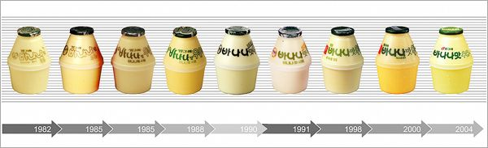

빙그레에서 1974년 6월부터 판매한 가공우유로, 2018년 기준 빙그레 회사 전체 매출의 약 24%가 빙그레 바나나맛 우유에서 나왔다.
빙그레 바나나맛 우유는 2005년 우유 단일 상품으로는 국내 최초로 연 매출액 1,000억원 돌파, 2018년에는 2,000억 돌파, 하루 평균 80만개#라는 가공할 판매량을 기록하는 등 가공우유계의 영원한 스테디셀러로 자리잡았다.
바나나맛 우유 시장의 빙그레 바나나맛 우유의 점유율이 역사상 단 한 번 흔들렸을 때가 "바나나는 원래 하얗다" 출시 직후. 그나마도 한 달만에 다시 원상 복귀되었다.
그리고 출시된지 40년이 지난 현재에도 그 위상을 유지하고 있다.